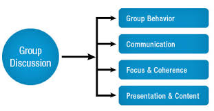

Group discussion is one of the most essential round which tests the communication skills of the candidate as well us inclines the candidate a bit towards his comfort zone where the candidate can easily express his/her views.A discussion group is a group of individuals with similar interest who gather either formally or informally to bring up ideas, solve problems or give comments. The major approaches are in person, via conference call or website. People respond comments and post forum in established mailing list, news group or ICR[disambiguation needed]. Other group members could choose to respond by posting text or image.
